1. Запись через форму на сайте или личные сообщения.
2. После согласования даты вносится задаток 20% от стоимости пакета.
3. Остаток оплачивается в день съёмки.
4. Отмена и перенос: не позднее чем за 7 дней.
— Базовая цветокоррекция входит в стоимость.
— Срок обработки: до 14 дней.
— Дополнительная ретушь обсуждается индивидуально.
• Фотограф оставляет за собой право использовать фото для портфолио.
• Готовые фотографии передаются в электронном виде.
• При съёмке на улице учитывайте погоду — перенос возможен за 2 дня.
• Портретная съемка: от 8 000 ₽
• Fashion съемка: от 15 000 ₽
• Стрит-фотография: от 6 000 ₽
• Студийная съемка: от 10 000 ₽
• Event съемка: от 12 000 ₽
• Art съемка: от 20 000 ₽